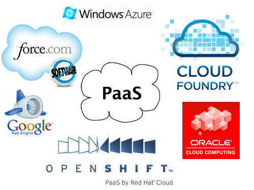
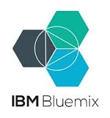
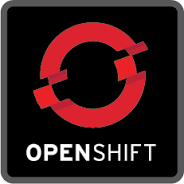

글로 배운 클라우드(PaaS) 직접 사용해보기.
자바카페 2015년 Open세미나
http://www.cjred.net/pt/2015-11-28.html
Created by 이정근
소개 내용
Cloud 서비스...

PaaS...
 + 
이런 분들에게 추천합니다.
- 실습을 하고 싶은 학생
- 취업을 준비하는 취준생
- 스타트업 업체
- 대용량 서비스를 하는 중견기업
OpenShift 소개

공짜.
- 3개까지 application 생성가능
- 기간은 제한없음.
- 신용카드정보를 요구하지 않음
유료도 있어요.
Lab 1 - Web interface 사용
회원가입
- application 생성
- Cartridges 추가
- Source Download (Git)
Lab 2 - rhc setting
Ruby , Git, rhc (OpenShift Client Tool) 설치하기
rhc setup
Lab 3 - rhc using
STS(Eclipse)에서 OpenShift 사용 소개
http://blog.cjred.net/setup-sts-eclipse-openshift-openpaas/... 편하지 않나요?!
하나 더...
OpenPaaS 소개
장점
- 5개까지 Application 생성가능
- 국내 개발환경 지원, 전자정부프레임워크 , Cubrid 등
- 5개까지 Application 생성가능
- 트래픽, 저장공간 등 무한사용가능
생각해볼점
- 시스템 업그레이드가 되지 않음 (JDK 1.6)
- 관리 및 유지보수 소홀
- 불안.....